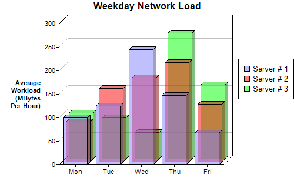

This example demonstrates using multiple bar layers with semi-transparent colors to create a depth bar chart.
ChartDirector allows an XYChart to containing multiple layers of the same or different types. In this example, all layers are 3D bar layers. The bars are drawn in semi-transparent colors to avoid the bars on the front hiding the bars at the back.
The following is the command line version of the code in "cppdemo/depthbar". The MFC version of the code is in "mfcdemo/mfcdemo". The Qt Widgets version of the code is in "qtdemo/qtdemo". The QML/Qt Quick version of the code is in "qmldemo/qmldemo".
#include "chartdir.h"
int main(int argc, char *argv[])
{
// The data for the bar chart
double data0[] = {100, 125, 245, 147, 67};
const int data0_size = (int)(sizeof(data0)/sizeof(*data0));
double data1[] = {85, 156, 179, 211, 123};
const int data1_size = (int)(sizeof(data1)/sizeof(*data1));
double data2[] = {97, 87, 56, 267, 157};
const int data2_size = (int)(sizeof(data2)/sizeof(*data2));
// The labels for the bar chart
const char* labels[] = {"Mon", "Tue", "Wed", "Thu", "Fri"};
const int labels_size = (int)(sizeof(labels)/sizeof(*labels));
// Create a XYChart object of size 500 x 320 pixels
XYChart* c = new XYChart(500, 320);
// Set the plotarea at (100, 40) and of size 280 x 240 pixels
c->setPlotArea(100, 40, 280, 240);
// Add a legend box at (405, 100)
c->addLegend(405, 100);
// Add a title to the chart
c->addTitle("Weekday Network Load");
// Add a title to the y axis. Draw the title upright (font angle = 0)
c->yAxis()->setTitle("Average\nWorkload\n(MBytes\nPer Hour)")->setFontAngle(0);
// Set the labels on the x axis
c->xAxis()->setLabels(StringArray(labels, labels_size));
// Add three bar layers, each representing one data set. The bars are drawn in semi-transparent
// colors.
c->addBarLayer(DoubleArray(data0, data0_size), 0x808080ff, "Server # 1", 5);
c->addBarLayer(DoubleArray(data1, data1_size), 0x80ff0000, "Server # 2", 5);
c->addBarLayer(DoubleArray(data2, data2_size), 0x8000ff00, "Server # 3", 5);
// Output the chart
c->makeChart("depthbar.png");
//free up resources
delete c;
return 0;
}
© 2023 Advanced Software Engineering Limited. All rights reserved.